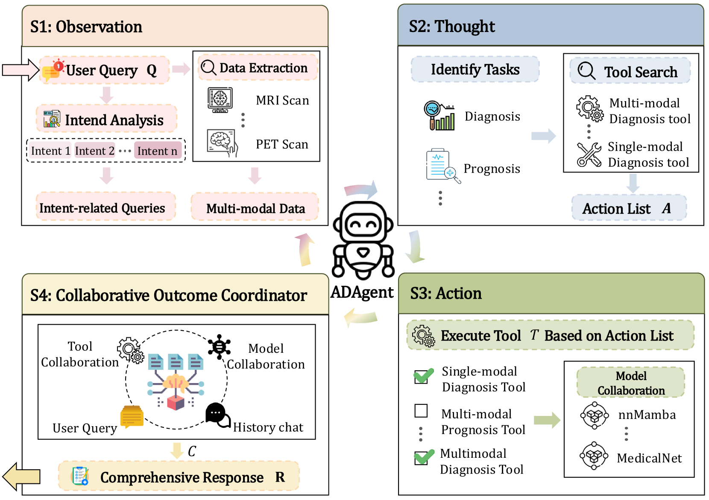
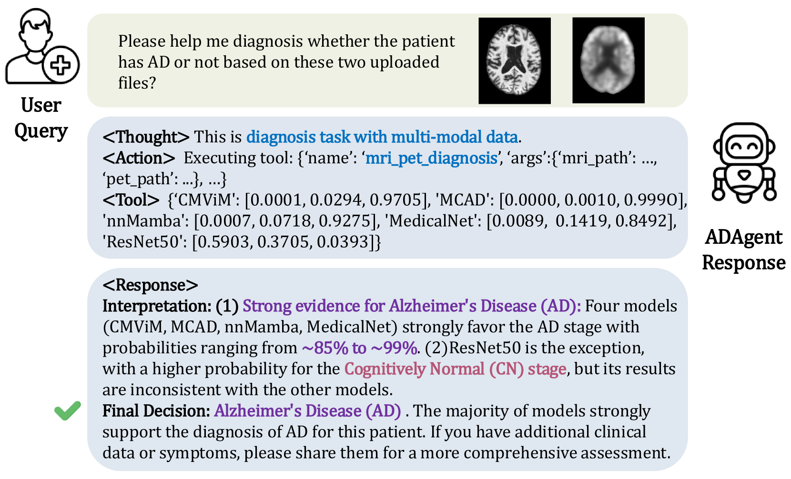

ADAgent composes multiple imaging tools (e.g., ResNet, MedicalNet) with LangChain and LangGraph frameworks on GPT-4o that aggregates evidence and issues a human-readable reasoning trace and final decision.


Reported results from the paper (these are literature numbers, not our runs). Tasks shown:
Diagnosis: three-way classification predicting Cognitively Normal (CN), Mild Cognitive Impairment (MCI), or Alzheimer's Disease (AD).
Prognosis: binary prediction whether an MCI patient will convert to AD within 36 months (converter vs stable).
| Multi-modal diagnosis task | ||||
|---|---|---|---|---|
| Method | ACC | SPE | SEN | F1 |
| MedicalNet | 0.571±0.009 | 0.768±0.009 | 0.591±0.030 | 0.586±0.015 |
| nnMamba | 0.527±0.016 | 0.753±0.008 | 0.572±0.021 | 0.541±0.028 |
| ResNet50 | 0.567±0.039 | 0.771±0.018 | 0.599±0.036 | 0.581±0.043 |
| MCAD | 0.548±0.029 | 0.766±0.014 | 0.591±0.027 | 0.556±0.026 |
| CMViM | 0.617±0.014 | 0.659±0.003 | 0.630±0.013 | 0.633±0.010 |
| ADAgent | 0.644±0.014 | 0.794±0.010 | 0.644±0.021 | 0.647±0.018 |
| Multi-modal prognosis task | ||||
|---|---|---|---|---|
| Method | ACC | SPE | SEN | F1 |
| MedicalNet | 0.763±0.026 | 0.902±0.017 | 0.333±0.052 | 0.407±0.064 |
| nnMamba | 0.733±0.038 | 0.843±0.068 | 0.394±0.189 | 0.405±0.147 |
| ResNet50 | 0.726±0.034 | 0.853±0.029 | 0.333±0.052 | 0.374±0.065 |
| MCAD | 0.719±0.026 | 0.892±0.061 | 0.182±0.091 | 0.231±0.080 |
| CMViM | 0.815±0.046 | 0.912±0.029 | 0.515±0.105 | 0.575±0.109 |
| ADAgent | 0.822±0.010 | 0.941±0.019 | 0.545±0.043 | 0.561±0.030 |
Key modifications to make ADAgent comparable to tabular SOTA methods.
How the LLM Coordinator orchestrates the tabular SOTAs based on the execution logs:
Manages the cyclic control flow. It defines nodes (process, execute) and conditional edges (has_tool_calls) to loop between reasoning and tool execution until a final answer is reached.
Provides the core components: the ChatOpenAI wrapper (GPT-4.1-mini), prompt templates, message history, and the standard interface for binding our tabular tools (e.g., pet_diagnosis).
[LangGraph] Enter `process` node [LangChain] `ChatOpenAI` generates tool call [LangGraph] `has_tool_calls` = True [LangGraph] Enter `execute` node [LangChain] Run `pet_diagnosis` tool [LangGraph] Loop back to `process` node [LangChain] `ChatOpenAI` synthesizes final diagnosis [LangGraph] `has_tool_calls` = False -> Exit
processChatOpenAI analyzes state & generates response or tool callshas_tool_calls?executeprocessThe LLM is guided by a strict system prompt that defines its persona, rules of engagement, and the expected output format.
How the LLM interprets the tabular tool outputs to form a final diagnosis:
{
'XGBoost': [0.29, 0.47, 0.24], // [CN, MCI, AD]
'TabNet': [0.37, 0.28, 0.35],
'NODE': [0.48, 0.40, 0.12]
}
| Validation Results | ||
|---|---|---|
| Method | ACC | F1 |
| XGBoost | 0.6314±0.0574 | 0.6301±0.0587 |
| FT-Transformer | 0.6461±0.0403 | 0.6491±0.0420 |
| TabNet | 0.6497±0.0311 | 0.6382±0.0359 |
| TabPFN | 0.6461±0.0427 | 0.6486±0.0427 |
| NODE | 0.6392±0.0492 | 0.6415±0.0588 |
| TabM | 0.6379±0.0454 | 0.6258±0.0573 |
| ADAgent | — | — |
| Test Results | ||
|---|---|---|
| Method | ACC | F1 |
| XGBoost | 0.6261±0.0134 | 0.6242±0.0096 |
| FT-Transformer | 0.6313±0.0178 | 0.6271±0.0144 |
| TabNet | 0.5991±0.0367 | 0.5872±0.0404 |
| TabPFN | 0.6565±0.0266 | 0.6564±0.0231 |
| NODE | 0.6461±0.0350 | 0.6467±0.0318 |
| TabM | 0.6078±0.0239 | 0.6083±0.0107 |
| ADAgent | — | — |
| Validation Results (MRI only) | ||
|---|---|---|
| Method | ACC | F1 |
| XGBoost | 0.6052±0.0543 | 0.5960±0.0611 |
| FT-Transformer | 0.5870±0.0437 | 0.5711±0.0574 |
| TabNet | 0.5922±0.0543 | 0.5541±0.0771 |
| TabPFN | 0.5922±0.0474 | 0.5881±0.0501 |
| NODE | 0.6000±0.0420 | 0.5860±0.0520 |
| TabM | 0.5895±0.0563 | 0.5871±0.0605 |
| ADAgent | — | — |
| Test Results (MRI only) | ||
|---|---|---|
| Method | ACC | F1 |
| XGBoost | 0.5817±0.0320 | 0.5773±0.0333 |
| FT-Transformer | 0.6174±0.0230 | 0.6080±0.0204 |
| TabNet | 0.5243±0.0302 | 0.5044±0.0280 |
| TabPFN | 0.6174±0.0177 | 0.6085±0.0183 |
| NODE | 0.5991±0.0263 | 0.5913±0.0280 |
| TabM | 0.5974±0.0338 | 0.5985±0.0296 |
| ADAgent | — | — |
| Validation Results (PET only) | ||
|---|---|---|
| Method | ACC | F1 |
| XGBoost | 0.6065±0.0543 | 0.5940±0.0611 |
| FT-Transformer | 0.6043±0.0235 | 0.5918±0.0227 |
| TabNet | 0.6039±0.0391 | 0.5802±0.0565 |
| TabPFN | 0.5983±0.0270 | 0.5857±0.0246 |
| NODE | 0.6013±0.0381 | 0.5878±0.0424 |
| TabM | 0.5882±0.0307 | 0.5727±0.0391 |
| Test Results (PET only) | ||
|---|---|---|
| Method | ACC | F1 |
| XGBoost | 0.5983±0.0332 | 0.5955±0.0347 |
| FT-Transformer | 0.6243±0.0176 | 0.6140±0.0158 |
| TabNet | 0.5417±0.0146 | 0.5197±0.0202 |
| TabPFN | 0.6304±0.0277 | 0.6219±0.0258 |
| NODE | 0.5948±0.0332 | 0.5889±0.0315 |
| TabM | 0.6183±0.0229 | 0.6236±0.0175 |
| ADAgent (gpt-4-1-mini) | 0.4991±0.0167 | 0.4122±0.0174 |
Core Issue: LLMs (especially smaller models like gpt-4-1-mini) struggle with raw numerical reasoning. They frequently misinterpret arrays of probabilities, leading to flawed aggregation.
Patient: pet_002_S_0295.csv | Classes: [CN, MCI, AD]
The model fails to correctly tally the votes and hallucinates a majority.
Run other baselines: